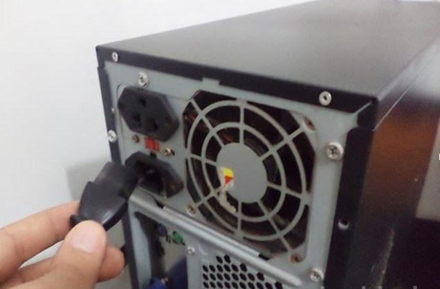

Como Instalar Uma Fonte De Alimentação
Passo 1
Desligue o computador, inclusive da tomada. Nunca mexa na máquina com a fonte ligada. O risco de choque elétrico é iminente.
Passo 2
Abra O Gabinete.

O método para abrir varia de acordo com seu design. A maioria dos novos gabinetes usa um painel ou uma porta. Computadores mais antigos exigem que toda a tampa seja removida. Remova todos os parafusos que prendem a tampa à caixa e coloque os parafusos de lado.
Todas as fontes de alimentação contêm capacitores que retêm energia depois que a fonte de alimentação é desligada. Nunca abra ou insira objetos metálicos nas aberturas da fonte de alimentação, pois há risco de choque elétrico.
Passo 3
Alinhe A Fonte

Alinhe a fonte na caixa para que os quatro orifícios de montagem se alinhem corretamente. Verifique se qualquer ventoinha de entrada de ar na fonte de alimentação está voltada para o centro do gabinete e não para a tampa do gabinete. Aperte a fonte de alimentação. Segure a fonte na posição enquanto a parafusa no gabinete.
Passo 4
Ajuste A Tensão

Ajuste o interruptor de tensão. Verifique se o interruptor de voltagem na parte traseira da fonte de alimentação está ajustado para o nível de voltagem adequado para a sua casa. Em geral, o padrão do Brasil é 110v ou 220v.
Passo 5
Conecte A Placa-Mãe

Conecte a energia aos dispositivos. Muitos itens em um gabinete de computador requerem energia da fonte de alimentação. Normalmente, esses dispositivos usam o conector estilo Molex de quatro pinos. Localize os cabos de alimentação de tamanho apropriado e conecte-os a qualquer dispositivo que precise de energia.
Passo 6
Conecte Os Dispositivos Adicionais

Conecte a fonte de alimentação na placa-mãe. Se o computador tiver a placa-mãe instalada, conecte os cabos de alimentação à placa-mãe. A maioria das placas-mãe modernas usa o grande conector de alimentação ATX que está conectado ao soquete da placa-mãe. Algumas placas-mãe requerem uma quantidade adicional de energia através de um conector ATX12V de quatro pinos.
Passo 7
Feche O Gabinete
Recoloque a tampa do computador ou retorne o painel ao gabinete. Aperte a tampa ou painel com os parafusos que foram removidos quando você abriu o gabinete. Conecte a energia e ligue o computador. O sistema do computador deve ter energia disponível e pode ser ligado.